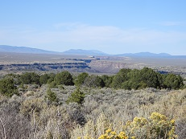
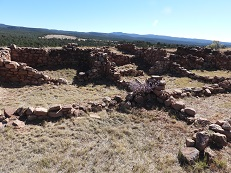
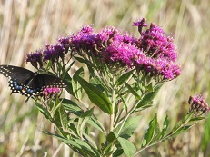

Hi, everyone,
Mark and I hope that you have been happy and well in 2023!
This year Mark and I traveled more than we had in the previous few years, and we enjoyed seeing many of our relatives in person for the first time since 2020. In May we joined my cousin Carol and her family, along with my brothers and sisters-in-law, in Toledo for a celebration of life for my uncle. Although the reason for the occasion was sad, it was wonderful to hear everyone's stories of my uncle's life and adventures. While there, we also went on several bird-watching forays with my brother Jim, and spent the evenings hanging out with my siblings/in-laws. In August we traveled east again, to Poughkeepsie to visit with Mark's mother and sister for several days. It was great to see everyone (outside of a zoom box) after so long.
We also saw a friendly pair of sandhill cranes (IN), a prothonotory warbler (OH), halberd-leaved rose mallow (IL), and butter-and-eggs (NY) along the way.
In addition to these visits, another highlight of the year was a trip in October to northern New Mexico for the annular eclipse. We had a wonderful view of the eclipse, watching from a mesa top where we were able to experience the temperature drop and notice the very odd effect the eclipse had on our shadows. It was also cool to see the wildlife - in particular an inquisitive lizard - come out when the sun came back and the temperature rose again.
|  |  |
As usual our work has kept us quite busy, with some changes this year. Four of our PhD students - Ana, Andrew, Ash, and Aurora - completed their degrees and graduated this year, making a significant change for us and our research group. It's been great to keep more in touch with many of our former PhD students this year, too, including Anisah, Ashley, Jesse, and Steve who visited through our research seminar on zoom or in person at our department's 125th anniversary celebration (or both), and David, who sent me a book he published this year, which has been neat to read. In the fall semester I began another large change in my work: UNL awarded a $4 million 5 year grant for interdisciplinary work applying quantum science and engineering to a variety of "grand" problems - sustainable agriculture, carbon capture/climate change, etc. - and I am one of the two co-leads (the other is in physics) of the grant. It has been an interesting experience co-organizing and leading the project team (21 faculty from 9 departments across 5 colleges - very interdisciplinary!). So far I've just been doing a lot of administration, but in the coming semester I will start my part in the research for the project (and will not be teaching, to give me time for more research), which I'm looking forward to.
Mark and I also visited many parks and refuges in Nebraska; here are some of our favorite pictures:
|  |
In case you're curious, in order these are pictures of scarlet globemallow; prickly poppy; upright prairie coneflowers; common buckeye butterfly on New England aster; black swallowtail on ironweed; and blanketflower.
Often when I go through the year's pictures (over 10,000 in 2023!), I also look for interesting patterns and abstract photographic art, that might make nice computer wallpaper. This year several photos of fall color, in which the focus isn't on trees, stood out:
Susan